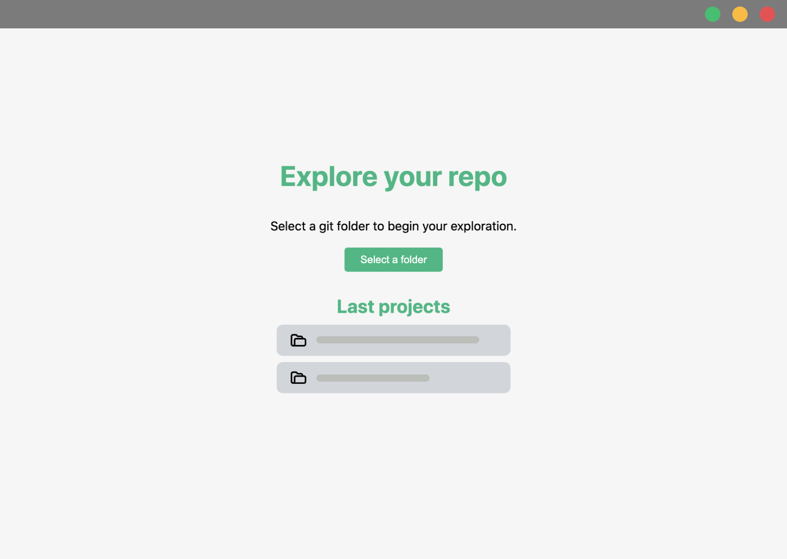

Learn GIT by exploring your repos.
Git View is an educationel open source project developed by the web development students at ECV Digital.

A visual Application to learn Git
Git View shows the commits of your real-life repositories on your local machine. See commits details and checkout in a simple UI adapted to leaning context.
It's all in the open !
Git View is an open source lead by the ECV master's degree students. The project is build with VueJS and Electron. If you have feature request or want to report a bug, please use the Github issues. You can alse fork the project to contribute !
Start contributing